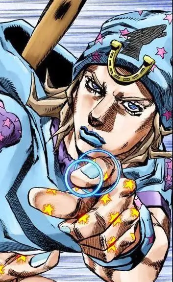
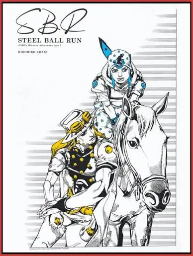
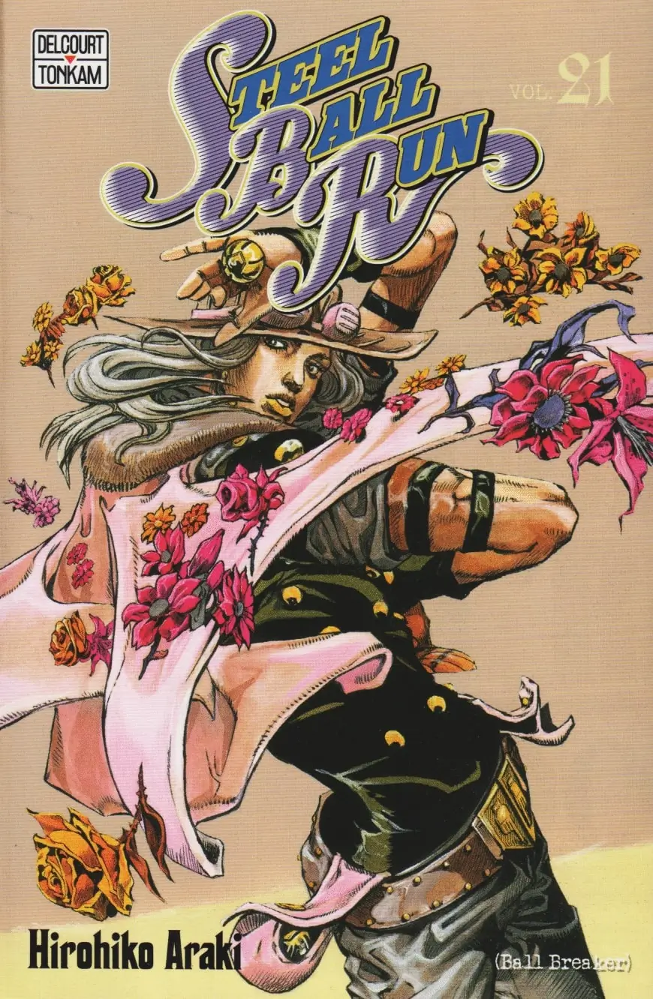

Ok, ok, ya se que la parte 7 de jojos es la mas larpeada y a la vez
una de las mas conocidas por ser la mas amada por los fans mamones de
jojos...
PERO ES QUE SI ESTA BUENA, NO TODOS SUS FANS SON MAMONES, LO JURO
los stands son interesantes, los caballos hermosos y bien dibjados,
araki coloreando como un campeon ,la evolucion en el
arte de araki que la verdad no me molesta que sea "mas realista" ni
que los personajes ya no esten HIPERtrofiados,
de hecho me gusta la cantidad tan exagerada de
detalles y calidad de dibujo sumado a coloreado *MMMUA* cette
magnifique
Tambien creo que no eh hablado tanto de esto como podria, deberia
dedicarle una seccion completa al tema CABALLOS osea,
NO son mis animales favoritos, yo soy fiel a los perros como ellos
solos.
PERO ES TAMBIEN PORQUE CON LOS CABALLOS ESO NO ES FAVORITSMO, ES
OBSECION
y bueeeno, ya que la parte 7 de jojos es una fucking carrera de
caballos, pos obviamente tiene muchos caballos y pues yo feliz, mas
con los detalles, stats, curiosidades, etc, como por ejemplo la yegua
de Gyro siendo una yegua de trabajo de 4 años de posible origen
australiana ... esos detallitos hacen feliz mi corazon, tambien el
caballo de Jhonny siendo un caballo viejito porque teniendo mas
experiencia es menos probable que se fracture por cometer una
inprudencia DIOSSSSS , ESO ES ESCRITURA ESO ES DARLE
VIDA A UN MUNDO, GRACIAS POR TODO SEÑOR ARAKI


Soy un criminal XD
ok, ok, ok, forma muy estupida de decir que siento que estoy robando
al usar el hermoso arte del señor Araki en esta
pagina, ASI QUE este parrafo lo voy a usar unica y exclusivamente para
darle su debido credito al señor Araki por todas sus ilustraciones que
estoy usando en esta seccion. TAMBIEN CONTARTE A TI LECTOR que en cuanto lea
jojolion ¡¡ es muy posible que haga una seccion a jojolion tambien !!

Gryro ReyDelAura Zeppeli
pues claro que no podia hablar de la parte 7 de jojos sin hablar del
que muy probablemente seria su verdadero protagoni-
ok, ok, dejen me explico, dejen me explico.
ENTIENDO que se llama "Jojos bizarre
adventure" y no "Zeppeli bizarre adventure"
PERO EN SERIO PLANEAS DECIRME QUE COMPARTEN TIEMPO EN PANTALLA
MITAD Y MITAD
¡¿Y GYRO NO ES TAMBIEN PROTAGONISTA?! si, ok, bajo esa logica creo que
habrian demasiados protagonistas en jojos que no se llaman jojo. Pero
es que gyro es especial tiene un genuino desarrollo,
no se queda en una escena reflexiva sin impacto en el personaje,
escala su poder junto a Jhonny, se lleva la mayoria de los absolute
aura moments y ademas a mi subjetividad creo que Gyro hace en las
batallas de SBR lo que Giorno en GW, osea digase tambien, sobrevivir
en lo que se saca una estrategia del anastasio que
curiosamente es la estrategia del ciglo solo para que su culon (con el
que tienen una relacion homo herotica casi casi) les ayude a hacer una
estrategia mas sensata algunas veces donde los dos no quedan al borde
de la muerte.
Y VOILA, LLEGO A LA IDEA PRINCIPAL DE MI TESIS. Jhonny es como un
Bucciarati y Gyro es como un Giorno, solo que con el avance en
escritura y dibujo de Araki pues tuvieron mas desarrollo y exposicion
ahora si, ya puedes decidir si lincharme o perdonarme, pero yo siempre
pensare que Gyro es tan protagonista como Jhonny